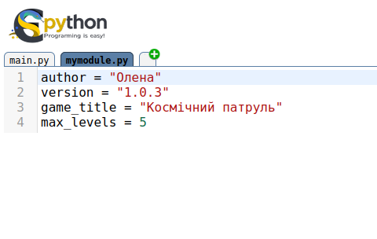
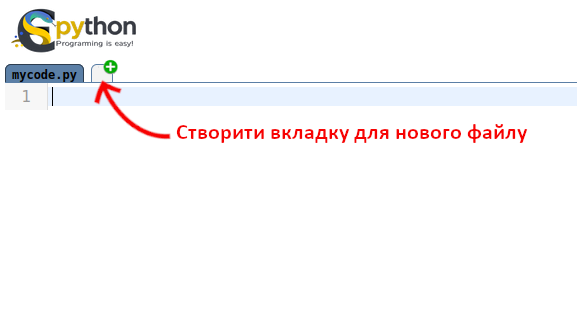
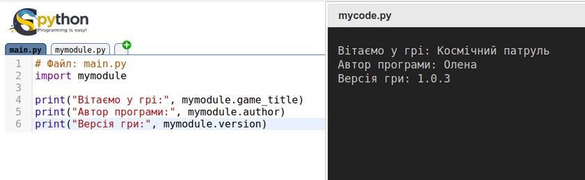
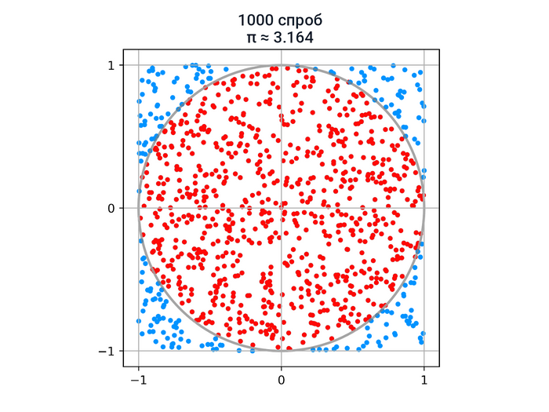
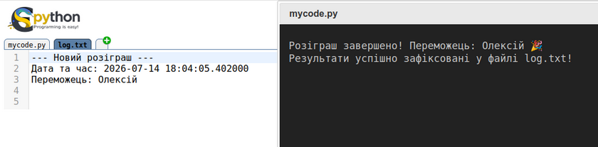

Python вміє робити чимало корисного: додавати числа, працювати зі списками, виводити текст на екран чи зчитувати файли. Але якби розробники спробували помістити абсолютно всі можливі команди в один набір, Python став би занадто громіздким, важким і повільним.
Замість цього розробники використали модульний підхід. Справжній програміст схожий на майстра, який не носить усі інструменти в кишенях, а бере із собою компактний ящик: якщо йому потрібен молоток, гайковий ключ чи викрутка, він просто відкриває ящик і дістає потрібний прилад. У Python такі готові набори інструментів називаються модулями.
Модуль — це файл з кодом програми Python, яка містить функції, що їх часто доводиться повторно використовувати (їх також називають бібліотеками, англ. libraries). Це розширення для нашої програми, яке додає їй нові, спеціальні можливості. Нам не потрібно писати складний код «з нуля» — можна просто взяти вже готову команду, написану іншими програмістами, і використати її у власних цілях. Це схоже на користування сучасним автомобілем чи смартфоном: вам не обов'язково знати, як влаштований двигун чи мікросхема зсередини, щоб успішно їхати або телефонувати. Достатньо знати, яку кнопку натиснути.
Ось лише кілька прикладів того, що дають готові модулі:
Розробники Python створили численні модулі для найрізноманітніших завдань. Тому завжди варто перевіряти, чи вже не існує готового модуля для того, що ви збираєтеся написати самі. Більшість цих модулів вже входять до стандартного комплекту Python. Ознайомитися з вичерпною документацією можна на офіційному сайті Python — кількість доступних модулів вражає (понад 300).
Модуль — це окремий файл із готовим кодом та спеціальними командами, який ми можемо імпортувати до своєї програми. Усі модулі у Python діляться на два основні типи:
Нарешті, зауважте, що існує чимало зовнішніх модулів, не встановлених за замовчуванням у Python, але дуже широко використовуваних для аналізу даних і наукових обчислень. Наприклад: NumPy (робота з векторами й матрицями), matplotlib (побудова графіків), pandas (аналіз табличних даних) тощо.
Щоб імпортувати модуль до своєї програми, використовують ключове слово import (з англійської — імпортувати, завозити). Цей рядок зазвичай пишуть на самому початку програми.
У попередніх розділах ми вже кілька разів стикалися з поняттям модуля — наприклад, коли хотіли отримати випадкове число:
import random
print(random.randint(0, 10))
🖥 Результат:
4
Розглянемо приклад детальніше:
import надає доступ до всіх функцій модуля random.randint(0, 10) з модуля random. Вона повертає ціле число, випадково обране в діапазоні від 0 до 10 включно.Ми також зустрічали модуль math під час вправи про спіраль (Розділ «Файли»). Він дав нам доступ до тригонометричних функцій синуса й косинуса, а також до константи π:
import math
print(math.cos(math.pi / 2))
print(math.sin(math.pi / 2))
🖥 Результат:
6.123233995736766e-17
1.0
Отже, синтаксис import modul дозволяє імпортувати цілу серію функцій, згрупованих за темами: наприклад, функції для роботи з випадковими числами — у random, математичні функції — у math. У Python є багато інших вбудованих модулів (тобто присутніх за замовчуванням при встановленні Python).
from ... import ...)Є й інший спосіб імпортувати одну або кілька функцій з модуля. Якщо з усього великого «ящика інструментів» нам потрібна лише одна конкретна команда, ми можемо взяти тільки її:
from random import randint
print(randint(0, 10))
🖥 Результат:
7
За допомогою from можна імпортувати конкретну функцію з модуля. У цьому разі ім'я модуля повторювати не потрібно — досить самого імені функції. Це зручно, коли ми плануємо використовувати цю команду дуже часто в тексті програми, і довгі префікси заважали б читати код.
Можна також імпортувати всі функції модуля одразу:
# Скрипт: import_use_zirochkoyu.py
from random import *
print(randint(0, 50))
print(uniform(0, 2.5))
🖥 Результат:
46
0.6494317476072795
Інструкція from random import * імпортує всі функції модуля random, і ними можна користуватися напряму — randint(), uniform() тощо.
Часто на практиці, замість того, щоб імпортувати одразу всі функції модуля:
from random import *
імпортують сам модуль:
import random
а потім явно викликають потрібні функції через виклик модуль.функція:
# Скрипт: import_modulya.py
import random
print(random.randint(1, 10))
print(random.uniform(1, 3))
🖥 Результат:
4
1.8645753676306085
import ... as ...)Іноді назви модулів бувають занадто довгими, або ми хочемо скоротити їх для швидкості набору. Тоді модулю можна дати коротке «прізвисько» (псевдонім) за допомогою слова as (як):
# Скрипт: psevdonim.py
import random as rand
print(rand.randint(1, 10))
print(rand.uniform(1, 3))
🖥 Результат:
6
2.643472616544236
Тут функції модуля random доступні через псевдонім rand.
Нарешті, щоб вивантажити з пам'яті вже завантажений модуль, можна скористатися інструкцією del:
# Скрипт: vyvantazhennya_modulya.py
import random
print(random.randint(0, 10))
print(random.uniform(1, 3))
del random
print(random.randint(0, 10))
🖥 Результат:
2
2.825594756352219
Traceback (most recent call last):
File "vyvantazhennya_modulya.py", line 6, in <module>
print(random.randint(0, 10))
NameError: name 'random' is not defined. Did you forget to import 'random'?
Виклик функції модуля random після його вивантаження (рядок з del) повертає помилку — і саме повідомлення підказує користувачеві, що модуль, можливо, забули імпортувати.
random звичайним імпортом та виведіть випадкове число від 10 до 20.randint напряму за допомогою from. Змініть діапазон випадковості від 100 до 999.random як r. Перевірте, чи працює команда r.randint(1, 2).
Щоб отримати довідку про модуль, достатньо викликати help():
import random
help(random)
Результат виконання (фрагмент):
Help on module random:
NAME
random - Random variable generators.
MODULE REFERENCE
https://docs.python.org/3/library/random
...
- Для навігації в довідці використовуйте стрілки вгору/вниз (посторінково) або Page-up/Page-down (сторінками).
- Щоб вийти з довідки, натисніть
Q.- Щоб знайти текст, введіть
/, потім потрібний текст і натисніть Enter. Наприклад, щоб знайти довідку проrandint(), введіть/randint.- Довідку про конкретну функцію можна отримати так:
help(random.randint).
Команда help() насправді більш загальна — вона дає довідку про будь-який об'єкт у пам'яті:
t = [1, 2, 3]
help(t)
Результат виконання (фрагмент):
Help on list object:
class list(object)
| list() -> new list
| list(sequence) -> new list initialized from sequence's items
|
| Methods defined here:
| __add__(...)
| x.__add__(y) <=> x+y
|
[...]
Нарешті, щоб миттєво дізнатися всі методи або змінні, пов'язані з об'єктом, скористайтеся функцією dir():
import random
print(dir(random))
🖥 Результат:
['BPF', 'LOG4', 'NV_MAGICCONST', 'RECIP_BPF', 'Random', 'SG_MAGICCONST',
'SystemRandom', 'TWOPI', 'WichmannHill', '_BuiltinMethodType', '_MethodT
ype', '__all__', '__builtins__', '__doc__', '__file__', '__name__', '_ac
os', '_ceil', '_cos', '_e', '_exp', '_hexlify', '_inst', '_log', '_pi',
'_random', '_sin', '_sqrt', '_test', '_test_generator', '_urandom', '_wa
rn', 'betavariate', 'choice', 'expovariate', 'gammavariate', 'gauss', 'g
etrandbits', 'getstate', 'jumpahead', 'lognormvariate', 'normalvariate',
'paretovariate', 'randint', 'random', 'randrange', 'sample', 'seed', 'se
tstate', 'shuffle', 'uniform', 'vonmisesvariate', 'weibullvariate']
Ось неповний список модулів, якими ви, ймовірно, користуватиметеся (повний перелік — на сторінці модулів офіційного сайту Python):
sin, cos, exp, pi...).Радимо дослідити сторінки цих модулів, щоб відкрити для себе всі їхні можливості. У Розділі 15 «Створення модулів» ви побачите більше про створення власного модуля, коли захочете часто перевикористовувати власні функції.
random: генерація випадкових чиселЦей модуль незамінний, коли потрібно додати елемент несподіванки: у комп'ютерних іграх, тестах чи генераторах паролів. Як уже згадувалося, модуль random[^10] містить функції для генерації випадкових чисел:
import random
print(random.randint(0, 10))
print(random.randint(0, 10))
print(random.uniform(0, 10))
print(random.uniform(0, 10))
🖥 Результат:
4
10
6.574743184892878
1.1655547702189106
Команда randint(a, b) повертає ціле випадкове число у проміжку між a та b (включаючи обидва кінці):
import random
print(random.randint(1, 100)) # Щоразу при запуску число буде іншим!
Модуль random дозволяє також випадково перемішувати елементи списку (метод .shuffle(), наче тасування колоди карт):
import random
x = [1, 2, 3, 4]
random.shuffle(x)
print(x)
random.shuffle(x)
print(x)
🖥 Результат:
[2, 3, 1, 4]
[4, 2, 1, 3]
cards = ["Туз", "Король", "Дама", "Валет"]
random.shuffle(cards)
print("Перемішана колода:", cards)
А ще — випадково обирати елемент із заданого списку (.choice(), наче наосліп дістати з мішка один випадковий елемент):
# Скрипт: vypadkovyi_vybir.py
import random
masti = ["чирва", "бубна", "трефа", "піка"]
print(random.choice(masti))
print(random.choice(masti))
🖥 Результат:
чирва
піка
students = ["Марко", "Олена", "Андрій", "Катерина"]
chosen = random.choice(students)
print("Сьогодні до дошки йде:", chosen)
Функція choices() (з s наприкінці) виконує кілька випадкових вибірок (із поверненням, тобто той самий елемент може повторюватися) із заданого списку. Кількість вибірок задає параметр k:
# Скрипт: kilka_vyboriv.py
import random
masti = ["чирва", "бубна", "трефа", "піка"]
print(random.choices(masti, k=5))
print(random.choices(masti, k=5))
print(random.choices(masti, k=10))
🖥 Результат:
['піка', 'чирва', 'чирва', 'бубна', 'піка']
['чирва', 'бубна', 'чирва', 'чирва', 'трефа']
['трефа', 'бубна', 'бубна', 'бубна', 'піка', 'чирва', 'трефа', 'чирва', 'піка', 'піка']
Якщо ви виконаєте ці приклади самостійно, результати, ймовірно, будуть іншими.
Для відтворюваності результатів (наприклад, у наукових розрахунках) часто потрібно отримувати ту саму послідовність, навіть якщо використовуються випадкові числа. Для цього визначають так зване «випадкове зерно» (random seed).
Визначення. У програмуванні справжня генерація випадкових чисел — складна задача, тож насправді використовують «генератори псевдовипадкових чисел». Для цього потрібне випадкове «зерно»(random seed) — здебільшого ціле число, яке передають генератору: він створює конкретну серію псевдовипадкових чисел, що залежить від цього зерна. Змінивши «зерно», ми отримаємо іншу серію чисел.
У Python випадкове «зерно» задають функцією seed():
import random
random.seed(42)
print(random.randint(0, 10))
print(random.randint(0, 10))
print(random.randint(0, 10))
🖥 Результат:
1
0
4
Тут «зерно» встановлено на 42. Якщо «зерно» не вказати, Python за замовчуванням використовує поточний момент часу (точніше — кількість секунд від фіксованої дати в минулому). Тож щоразу під час перезапуску Python «зерно» буде іншим.
Якщо ви виконаєте ті самі рядки коду (починаючи з random.seed(42)), результати можуть відрізнятися залежно від версії Python. Однак результати мають систематично збігатися, якщо перезапускати ці інструкції кілька разів поспіль на одній машині.
Використовуючи випадкові числа, важливо знати, який розподіл ймовірностей застосовує функція. Наприклад, базова функція
random.random()повертає випадковийfloatміж 0 і 1 із рівномірного розподілу: якщо витягнути багато чисел, усі значення в цьому діапазоні будуть рівноймовірними. Функціяrandom.randint()теж витягує ціле число з рівномірного розподілу. Аrandom.gauss()видобуває випадковийfloatіз гаусового (нормального) розподілу.
coin = ["Орел", "Решка"]. Напишіть програму, яка випадково обирає один із варіантів (імітація підкидання монети).colors = ["червоний", "зелений", "синій", "жовтий"]. Напишіть програму, яка випадково обирає колір для фарбування ігрового персонажа.
mathКоли звичайних знаків плюс, мінус чи ділення стає замало, на допомогу приходить модуль math. Він містить точні інженерні команди для математичних розрахунків:
math.sqrt(x) — обчислює квадратний корінь із числа x.math.pow(x, y) — підносить число x до степеня y.math.ceil(x) — округлює число в більшу сторону до найближчого цілого (округлення «до стелі»).math.floor(x) — округлює число в меншу сторону до найближчого цілого (округлення «до підлоги»).import math
print(math.sqrt(16)) # Виведе: 4.0
print(math.ceil(4.1)) # Виведе: 5 (навіть 4.1 перетвориться на 5)
print(math.floor(4.9)) # Виведе: 4 (навіть 4.9 перетвориться на 4)
Вам більше не потрібно вводити число Пі як 3.14 вручну. У модулі math уже зберігаються суперточні значення світових констант:
math.pi — число Пі (π ≈ 3.1415926...).math.e — число Ейлера (e ≈ 2.71828...).# Обчислення довжини кола за формулою L = 2 * pi * r
radius = 5
length = 2 * math.pi * radius
print("Довжина кола:", length)
S = π · r². Радіус вводиться з клавіатури. Для піднесення до степеня використайте math.pow().
datetimeЦей модуль допомагає програмі орієнтуватися в реальному часі: дізнаватися сьогоднішню дату, поточну секунду чи фіксувати час виконання якихось дій.
datetime.date.today() дозволяє дізнатися сьогоднішній рік, місяць та день:
import datetime
today = datetime.date.today()
print("Сьогоднішня дата:", today)
print("Поточний рік:", today.year)
datetime.datetime.now() повертає повну інформацію: поточну дату разом із годинами, хвилинами, секундами та мікросекундами:
import datetime
current_time = datetime.datetime.now()
print("Точний час системи:", current_time)
print("Поточна година:", current_time.hour)
print("Поточна хвилина:", current_time.minute)
"Сьогодні: [день], місяць: [номер місяця]", використовуючи datetime.date.today().Години : Хвилини.
osНазва модуля os походить від слова Operating System (Операційна система). Він дозволяє керувати файлами та теками на вашому справжньому комп'ютері безпосередньо з коду Python.
os.getcwd() показує повний шлях до теки на диску, де зараз працює ваша програма:
import os
where_am_i = os.getcwd()
print("Наша програма запущена в папці:", where_am_i)
os.listdir() дивиться всередину теки та повертає список текстових рядків — імен усіх файлів та підтек, які там лежать:
import os
files = os.listdir()
print("У цій папці містяться такі файли:")
for file in files:
print("- ", file)
У ЄPython модуль
osпрацює з віртуальною файловою системою, створеною у локальному сховищі браузера. Переглянути вміст цієї файлової системи можна скориставшись Розпорядником файлів (розділ Файли панелі керування)
Запустіть команду os.listdir() та перевірте, чи бачить Python ваш файл програми та файли нотаток, які ми створювали у попередніх розділах.
Створити свій власний модуль дуже просто, адже будь-який файл із кодом на Python (який закінчується на .py) вже є готовим модулем для іншого файлу!
Крок 1. Створіть у робочій теці свого проєкту новий порожній файл з ім'ям mymodule.py. Напишіть всередині нього кілька змінних-налаштувань для вашої майбутньої гри:
# Файл: mymodule.py
author = "Олена"
version = "1.0.3"
game_title = "Космічний патруль"
max_levels = 5

Збережіть та закрийте цей файл.У ЄPython файл для модуля створюється у вкладці редактора коду середовища програмування.

Крок 2. Тепер створіть поруч (в тій самій теці!) свій основний файл програми, наприклад main.py. Ми можемо імпортувати наш файл mymodule точнісінько так само, як ми підключали random чи math:
# Файл: main.py
import mymodule
print("Вітаємо у грі:", mymodule.game_title)
print("Автор програми:", mymodule.author)
print("Версія гри:", mymodule.version)

Чому це круто: ви можете винести великі налаштування, тексти діалогів чат-бота або списки товарів в окремі файли-модулі, щоб код вашої основної програми залишався чистим, коротким та зручним для читання.1. Помилка ModuleNotFoundError.
import random # Помилка! Надруковано "random" замість "random"
# ModuleNotFoundError: No module named 'random'
Як виправити: перевірте правильність написання назви модуля. Якщо це ваш власний модуль — переконайтеся, що він лежить у тій самій папці, що й головна програма.
2. Забули написати назву модуля при виклику.
import math
print(sqrt(25)) # Помилка! Назва команди з'явилася нізвідки
Як виправити: якщо імпортували через import math, обов'язково пишіть math.sqrt(25). Якщо хочете писати просто sqrt(25), імпортуйте через from math import sqrt.
3. Конфлікт імен (найнебезпечніша помилка).
Ніколи не називайте свої власні файли програми іменами стандартних модулів (наприклад, не створюйте файл random.py). Якщо ви назвете свій файл random.py і напишете всередині import random, Python заплутається, імпортує ваш же порожній файл сам у себе, і команда random.randint() перестане працювати!
Виведіть в одному рядку числа від 10 до 20 (включно) та їхні квадратні корені з трьома десятковими знаками. Скористайтеся модулем math і функцією sqrt(). Приклад:
10 3.162
11 3.317
12 3.464
13 3.606
[...]
Зверніться до документації функції math.sqrt().
Обчисліть косинус π/2, використовуючи модуль math, функцію cos() та константу pi. Зверніться до документації функції math.cos() та документації константи math.pi.
floatПокажіть, що √5 + √4 + √3 дорівнює e з точністю до 0.001. Потім покажіть, що √7 + √6 + √5 дорівнює π з точністю до 0.0001.
Константи π та e доступні через
math.piтаmath.e.
Виведіть числа від 1 до 10 з інтервалом в 1 секунду. Скористайтеся модулем time і функцією sleep(). Зверніться до документації функції time.sleep().
Згенеруйте випадкову послідовність із шести цілих чисел від 1 до 4. Скористайтеся модулем random і функцією randint(). Зверніться до документації функції random.randint().
Згенеруйте випадкову послідовність із 20 цифр (0–9) двома різними способами — за допомогою random.choice() та random.choices().
Напишіть програму, яка створює випадковий пароль із 4 цифр (кожна цифра генерується окремо за допомогою randint() та додається до текстового рядка).
Метод Монте-Карло — це підхід до розв'язання задач за допомогою багаторазового випадкового моделювання. У Python він зазвичай реалізується за допомогою модулів random або numpy.random. Чим більше випадкових експериментів виконується, тим ближчим до істинного значення стає отриманий результат, хоча він завжди залишається статистичною оцінкою, а не точним розв'язком.
Один із найвідоміших прикладів — оцінка числа π.
Оскільки
Тоді:
Нехай є коло радіусом 1 (суцільна лінія на Рис. 9.1), вписане в квадрат зі стороною 2 (пунктирна лінія). При R = 1 площа квадрата дорівнює (2R)², тобто 4, а площа круга, обмеженого колом, дорівнює πR², тобто π. Якщо вибрати N випадкових точок (з рівномірного розподілу) всередині квадрата, ймовірність того, що точка також потрапить у коло, становить ( $n$ — кількість точок, які фактично опинилися в колі):
звідки:
Визначте наближення числа π цим методом. Для N ітерацій:
x та y точки в діапазоні від -1 до 1. Скористайтеся функцією uniform() з модуля random.n.
Обчисліть відношення n до N і оцініть π. Яке значення π ви отримуєте для 100 ітерацій? 1000? 10 000? Порівняйте отримані значення зі значенням π із модуля math.
Для допомоги зверніться до документації функції random.uniform().
import random
N = 1000
inside = 0
for _ in range(N):
x = random.uniform(-1, 1)
y = random.uniform(-1, 1)
if x*x + y*y <= 1:
inside += 1
pi = 4 * inside / N
print(pi)
У ЄPython при великій кількості спроб може гальмувати браузер.
Задача. Створити програму для автоматичного розіграшу призів серед учасників. Програма має обрати випадкового переможця, зафіксувати точний час розіграшу і назавжди записати цей результат в офіційний файл-протокол log.txt.
import random
import datetime
# 1. Готуємо список учасників розіграшу
participants = ["Дмитро", "Ганна", "Сергій", "Марія", "Тетяна", "Олексій"]
# 2. Використовуємо модуль random для визначення переможця
winner = random.choice(participants)
print(f"Розіграш завершено! Переможець: {winner} 🎉")
# 3. Використовуємо модуль datetime для фіксації точного часу
time_now = datetime.datetime.now()
# 4. Використовуємо знання про файли для збереження результату на диск
with open("log.txt", "a", encoding="utf-8") as file:
file.write("--- Новий розіграш ---\n")
file.write(f"Дата та час: {time_now}\n")
file.write(f"Переможець: {winner}\n\n")
print("Результати успішно зафіксовані у файлі log.txt!")
